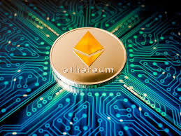
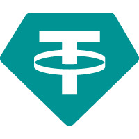

this table is based on how valuable the crypto is (this top 3 is based on forbes)
| image | info | link for info | Bitcoin (BTC) is a cryptocurrency (a virtual currency) designed to act as money and a form of payment outside the control of any one person, group, or entity. This removes the need for trusted third-party involvement (e.g., a mint or bank) in financial transactions. Bitcoin was introduced to the public in 2009 by an anonymous developer or group of developers using the name Satoshi Nakamoto. It has since become the most well-known and largest cryptocurrency in the world. Its popularity has inspired the development of many other cryptocurrencies. | https://www.investopedia.com/terms/b/bitcoin.asp |
|---|---|---|
|  | Ethereum is a decentralized global software platform powered by blockchain technology. It is most commonly known by investors for its native cryptocurrency, ether (ETH), and by developers for its use in blockchain and decentralized finance application development. Anyone can use Ethereum—it's designed to be scalable, programmable, secure, and decentralized—to create any secured digital technology. Its token is designed to pay for work done supporting the blockchain, but participants can also use it to pay for tangible goods and services if accepted | https://www.investopedia.com/terms/e/ethereum.asp |
|  | USDT is the symbol for Tether, a cryptocurrency that is pegged to the U.S. dollar. This means USDT is a stablecoin, fluctuating in value with the U.S. dollar and backed by Tether's dollar reserves. USDT is issued by Tether, a company owned by iFinex, the Hong Kong-registered company that also owns the crypto exchange BitFinex. As of March 2024, USDT was the third-largest cryptocurrency after Bitcoin (BTC) and Ethereum (ETH) and the largest stablecoin, with a market capitalization of nearly $99 billion. In 2023 and early 2024, Tether's USDT accounted for most of the exchanges out of other cryptocurrencies by volume. | https://www.investopedia.com/terms/t/tether-usdt.asp |